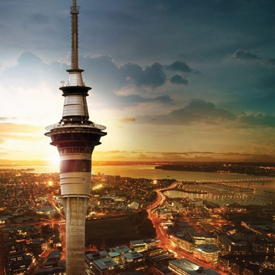
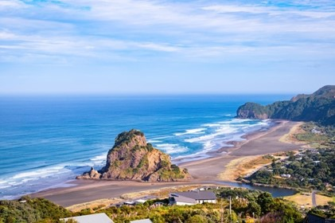
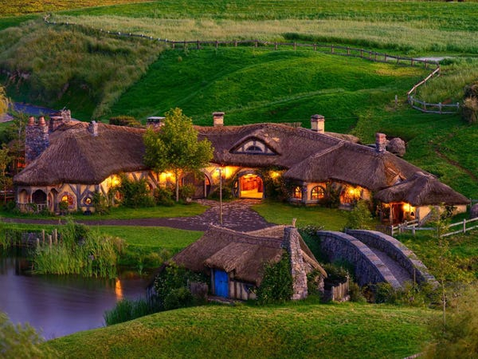
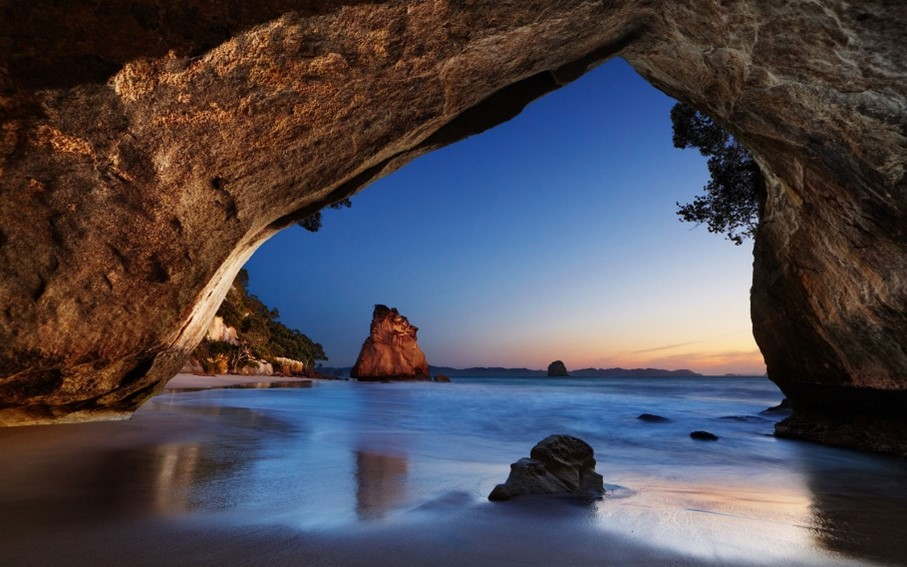
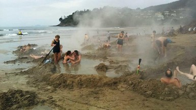
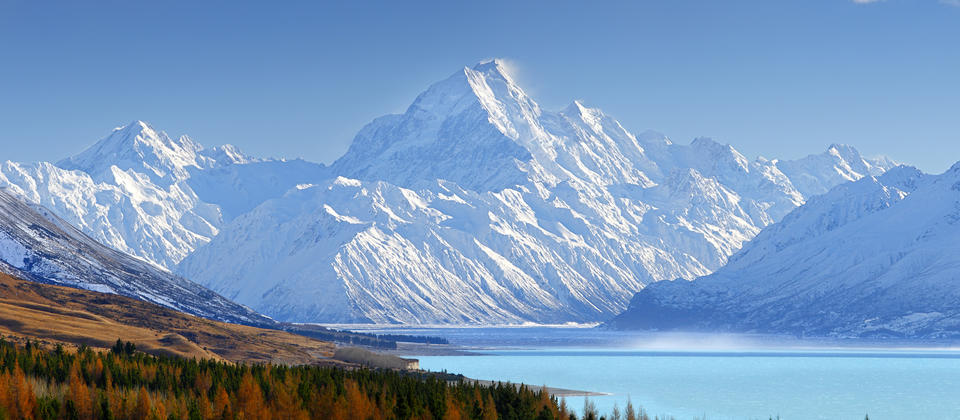
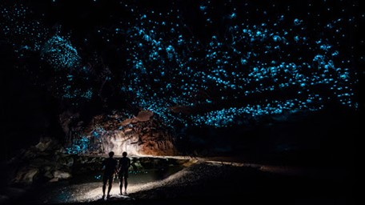

SKY TOWER  The Sky Tower is Auckland's greatest architectural icon and is present in almost every postcard of the city. Despite having recently opened (1997), the tower soon became one of New Zealand's main tourist attractions, as it easily stands out in the urban landscape of the country's largest city. As Auckland serves as a gateway to most tourists arriving in New Zealand. PIHA BEACH  Auckland is surrounded by beaches on all sides, being washed by both New Zealand coasts. To the west of the city, on the coast of the Tasman Sea, are the most famous stretches of sand in the country. Among them, the most famous is Piha Beach, very popular with surfers and internationally renowned. HOBBITON  Among New Zealand's tourist spots, perhaps the most publicized in recent years, Hobbiton is the name of the Village of Hobbits in the “Lord of the Rings” movie series. Near Matamata, in the interior of Waikato, the farm that served as a location for Hollywood has kept the scenery intact and open to visitors ever since, attracting fanatics for Middle-earth stories every day. CATHEDRAL COVE  Is a cave carved out of the stone, which gives access to one of the most beautiful beaches in the region, it was the setting for the films in the series “The Chronicles of Narnia”. HOT WATER BEACH  In the same region of Coromandel, another beach stands out among New Zealand's tourist attractions, but its patrons don't go there to cool off, on the contrary. Underneath the sands of the so-called Hot Water Beach, there are hot springs that make the experience of going to the beach somewhat unusual. To take advantage of the attraction, during periods of low tide, tourists dig small craters in the sand, which with the heating generated by the ground, become private thermal pools, creating a somewhat unique scene. MOUNT COOK  In the center of the South Island, Mount Cook is the highest mountain in the country, it is one of the few New Zealand destinations where you can see snow throughout the year. For all its grandeur and having several trails spread around its surroundings that facilitate your exploration. GLOWWORM CAVES  A true underground paradise, the Glowworm Caves demonstrate how spectacular nature can be. Walking through its interior, you will be enchanted by the stalactites (rock formations that appear from the ceiling, as if they were dripping water slowly melting) and stalagmites (rock formations that appear on the floor that also look like leaks melting slowly).